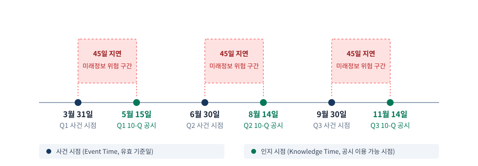
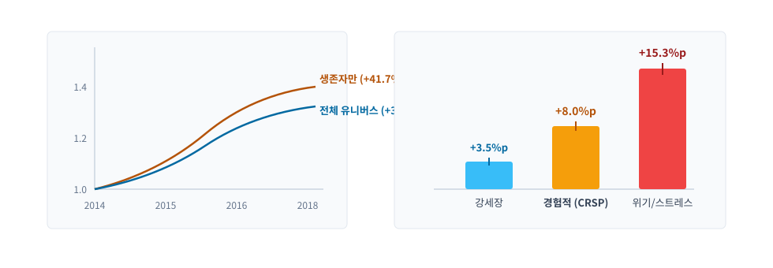
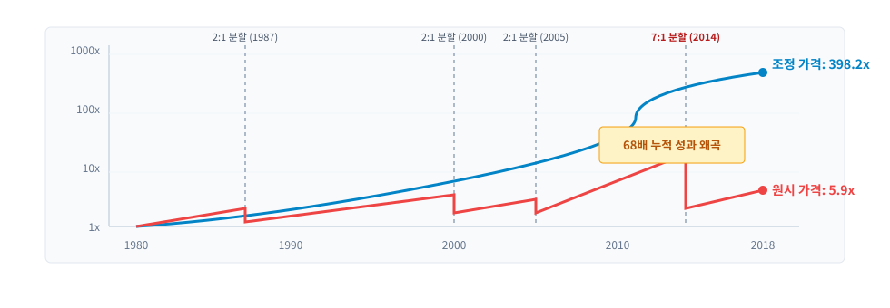
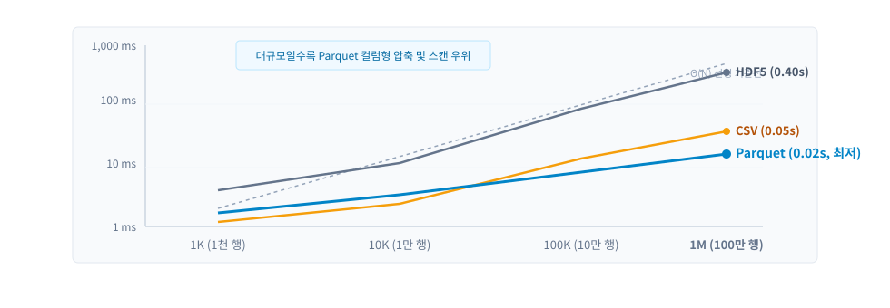
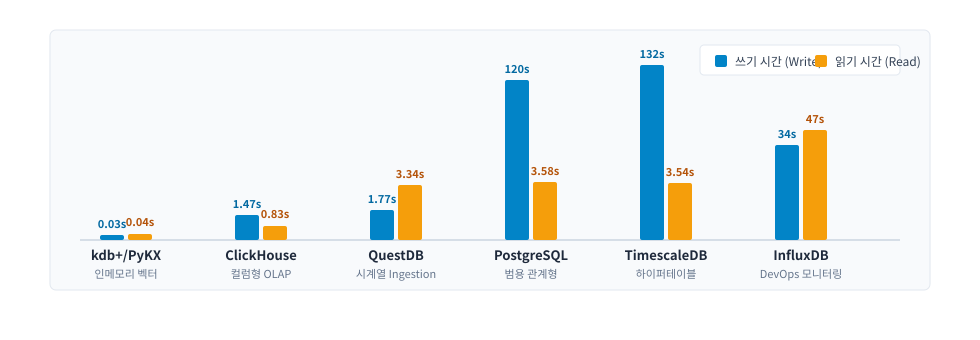

1. 분류와 내재 규칙
데이터는 단순 숫자가 아닙니다. 타임스탬프 관례, 캘린더, 기업행위, 수정 규칙을 사전에 확인해야 합니다.
트레이딩을 위한 머신러닝 3판
시장·펀더멘털·대체 데이터의 분류, 자산군별 시장 구조, 실사 프레임워크 및 스토리지 아키텍처
머신러닝 알고리즘 이전에 데이터 파이프라인의 조용한 결함을 먼저 잡아야 합니다.
데이터는 단순 숫자가 아닙니다. 타임스탬프 관례, 캘린더, 기업행위, 수정 규칙을 사전에 확인해야 합니다.
주식의 NBBO, 선물의 롤오버, 옵션의 표면, 크립토의 AMM 슬리피지까지 시장마다 가격 정의가 다릅니다.
시점 기준(PIT) 오류, 생존 편향, 기업행위 왜곡을 소싱 및 저장 단계에서 사전에 차단합니다.
머신러닝 트레이딩 실패의 대부분은 알고리즘이 아닌 데이터 파이프라인의 조용한 결함에서 발생합니다.
데이터 정의부터 자산군 구조, 위험 통제, 저장소 아키텍처로 이어지는 4단계 흐름입니다.
시장·펀더멘털·대체 데이터의 본질과 모델링 전 확인해야 할 4대 핵심 점검 항목을 다룹니다.
주식, ETP, 선물, 옵션, 크립토, 채권 등 9개 자산군의 상이한 시장 메커니즘과 실패 모드를 대조합니다.
5차원 품질 관리, 4대 치명적 실패(PIT, 생존 편향, 기업행위, 식별자), 벤더 실사 체크리스트를 점검합니다.
Parquet 파일 벤치마크, DuckDB/Polars 임베디드 분석, 시계열 DB 및 ASOF 조인 성능을 비교합니다.
이론과 함께 22개 공식 주피터 노트북의 실측 결과를 연계하여 확인합니다.
데이터가 현실의 어떤 과정을 측정하는지에 따라 관측 지연과 엔지니어링 주의점이 달라집니다.
호가, 체결, 집계 바(OHLCV) 등 시장 거래 활동을 반영하며, 밀리초 단위로 발생하고 높은 투명성을 가집니다.
재무제표(10-K/Q), 거시지표(FRED), 수급(COT) 등 자산 가치의 경제적 동인이며, 발표 지연과 빈티지 개정이 따릅니다.
위성 사진, 신용카드 패널, 온체인 TVL, 예측시장 등 비전통적 대용 신호이며, 높은 비정형성과 법적 권리(MNPI) 검증을 요합니다.
데이터를 읽을 때는 숫자뿐만 아니라 타임스탬프 관례와 조정 정책을 함께 읽어야 합니다.
장기 주식 데이터셋의 구조적 필드와 숨어 있는 상장폐지 결함을 검증합니다.
01_us_equities_eda] Quandl WIKI 3,199개 주식 패널[데이터 구조] 1962~2018년 미국 주식 3,199개 종목 일봉. 원시 가격(OHLCV), 기업행위 필드(split_ratio, ex-dividend), 사전 조정 가격(adj_close) 제공.
[결함 발견] 3,199개 종목 중 777개(24.3%)가 상장폐지되었으나, 이 기록은 2014년 이후에만 집중되어 있습니다. 1962~2013년 구간은 상장폐지 종목이 소급 삭제된 생존자 편향을 내포합니다.
역사적 데이터셋의 상장폐지 추적 구간을 사전에 확인하지 않으면 백테스트 전체가 무효화됩니다.
하위 파이프라인 코드가 데이터를 잘못 해석하지 않도록 사전에 확인하고 명시할 기준입니다.
Event Time(사건 발생 시점) vs Knowledge Time(공시 공개 시점) vs Ingestion Time(수집 시점)을 엄격히 분리하여 파이프라인에 전달합니다.
분할 및 배당 요인을 과거로 소급(Backward)하는지 전방(Forward) 적용하는지 명시하고, 총수익률(Total Return)과 단순 가격수익률 중 어느 기준을 쓸지 확정합니다.
타임스탬프와 기업행위 조정 규칙이 명확하지 않으면 특징 추출 단계에서 치명적 누수가 발생합니다.
식별자 일관성과 과거 수정 이력의 재현 가능성을 보장하기 위한 점검 항목입니다.
티커 변경, 상장폐지 후 티커 재사용, M&A에 영향을 받지 않도록 유효 기간이 지정된 영구 고유 식별자(FIGI, CIK, PermID) 크로스워크 매핑 체계를 구축합니다.
거시지표나 재무제표 개정 시, 의사결정 당시 시장 참여자가 실제로 보았던 최초 발표치(Vintage)를 온전히 복원할 수 있는 이중시간(Bitemporal) 조회를 지원합니다.
영구 식별자와 빈티지 복원 능력이 갖추어져야 백테스트의 역사적 사실성이 성립합니다.
같은 "가격"이라도 시장 구조에 따라 관측성과 엔지니어링 우선순위가 완전히 다릅니다.
| 자산군 | 관측 가능성 | 주요 실패 양식 | 엔지니어링 우선순위 |
|---|---|---|---|
| 주식 | 높음(통합) | 기업 활동, 분산 시장, 식별자 | 조정 방법론 |
| 선물 | 높음(거래소) | 롤 규칙, 연속성 방법 | 연속 시계열 구성 |
| 옵션 | 높음(단, 꼬리 영역은 희소함) | 비유동성 잡음, 표면 구성 | 표면 표현 |
| 디지털 자산 | 중간(거래소별) | 거래량 무결성, 24/7 세션화 | 거래소 선별 |
| 외환 | 낮음(OTC) | 통합 테이프 부재, 종가 관례 | 집계 규칙 정의 |
| 채권 | 낮음(OTC, 희소함) | 매트릭스 가격결정, 참고 호가와 확정 호가의 차이 | 유동성 추론 |
거래소 상품은 조정과 연속화가 핵심이고, 장외(OTC) 상품은 집계 관례와 추론 모델링이 선행되어야 합니다.
액면분할과 현금배당은 가격 시계열에 급격한 불연속을 만들어냅니다.
7:1 액면분할 시 원시 가격은 -86% 폭락으로 기록되어 모델에 잘못된 매도 신호와 인공 변동성을 학습시킵니다.
현재 가격을 기준으로 과거 가격을 소급 할인하여 경제적 수익률을 보존합니다.
\(P_{\text{adj}, t} = P_t \times \prod_{t < t_s} \frac{1}{\text{split}} \times \prod_{t < t_d} \left(1 - \frac{D_t}{P_{t-1}}\right)\)
장기 백테스트와 ML 특징 공학에서는 반드시 총수익률 기준 역방향 조정을 적용해야 합니다.
실제 38년간의 4회 주식분할과 54회 현금 배당을 자체 알고리즘으로 검증합니다.
02_corporate_actions] AAPL 실측 결과$\rightarrow$ 무려 68배의 누적 성과 왜곡 발생!
자체 계산값과 Quandl 기준값 대조 결과 9,400개 전체 거래일에서 상대 오차 0.05% 이내로 100% 검증 통과 (VALIDATION PASSED).
미조정 가격 사용 시 누적 성과를 68배 과소평가하게 되므로 엄격한 조정 검증이 필수적입니다.
거래소 상장 래퍼와 기초자산 보유층 사이의 불일치를 이해해야 합니다.
1. 분배금 미반영 / 2. 시장가 \(\neq\) NAV 괴리 / 3. 유동성 불일치
4. 룩스루 누출(미래 비중 사용) / 5. 레버리지·인버스 가치 잠식
03_etfs_eda] 100개 ETF 진단SPY와 원자재 ETF 간 23배 유동성 편차 확인.
4개 필드 독립 조정으로 인한 473건(0.1%)의 OHLC 불변식 위반(\(\text{Low} > \text{Open}\) 등) 진단.
ETP 분석 시 시장 가격과 NAV 수익률을 명확히 구분하고 보유 비중의 PIT를 통제해야 합니다.
영구 티커가 없는 선물 계약들을 경제적 손익을 보존하는 단일 시계열로 결합합니다.
비율 조정 (Ratio): 과거 가격에 비율을 곱해 백분율 수익률(PnL Ratio)을 완벽 보존 (ML 표준 권장).
차분 조정 (Difference): 절대 스프레드를 가감해 달러 PnL 보존 (단, 과거 가격 음수 위험).
04~06_futures_continuous]30개 CME 선물의 23시간 전자거래 세션 집계.
거래량 역전일 기반 자동 롤 탐지 및 벤더 연속물과 오차율 0% 교차 검증 완료.
롤오버 시점의 선택 자체가 백테스트 성과를 규정하므로 원시 계약과 연속 시계열을 함께 저장합니다.
수천 개 행사가와 만기 조합의 차원 폭발과 꼬리 잡음을 내재변동성 표면으로 극복합니다.
등가격(ATM) 근월물에 유동성이 집중되고 외가격(OTM) 꼬리는 잡음이 심합니다.
델타 기준(25D, 50D)과 고정 만기(30일)로 보간된 변동성 표면을 머신러닝 피처로 활용합니다.
07~09_options]Greeks 검증 (08): 블랙-숄즈 제1원리 기반 Delta, Gamma, Vega, Theta, Rho 자체 산출 및 벤더값 대조.
롤오버 정제 (09): 30일물 고정만기 시계열에서 세타 감소와 롤오버 점프를 분리하여 순수 변동성 수익률 추출.
옵션 표면은 단순한 시각화 요약이 아니라 분석 모델에 투입할 데이터셋 그 자체입니다.
전통 호가창을 가진 CEX와 풀 준비금 비율로 가격을 결정하는 DEX가 공존합니다.
CEX: 24/7 세션화(00:00 UTC) 및 가짜 거래량(워시 트레이딩) 필터링.
DEX: 호가창 대신 상수곱(\(x \cdot y = k\)) 풀 준비금 비율로 슬리피지와 MEV를 모델링.
10_crypto_perps_eda & 11]Binance 19개 코인 무기한 선물의 8시간 펀딩 비율(Funding Rate) 분석.
극단 펀딩비가 미래 반전 수익률을 예측함을 입증하고 현물-선물 델타 뉴트럴 차익거래 성과 실증.
DEX에서는 오더북 재구성이 성립하지 않으며 준비금 기반으로 유동성과 슬리피지를 계산해야 합니다.
단일하고 권위 있는 종가가 존재하지 않는 글로벌 분산 OTC 시장의 특성을 다룹니다.
FX (`12_fx_pairs_eda`): 런던 16:00 Fixing vs 뉴욕 17:00 마감환율 괴리 방지를 위한 종가 관례 확립.
채권: 비유동 채권의 매트릭스 가격평가(Matrix Pricing) 모델 가정 인지.
스왑: 846조 달러 시장. 단일 가격이 아닌 스프레드 커브(OIS, SOFR) 구축.
원자재: 인도 장소·등급에 따른 베이시스(Basis) 및 기간구조 모델링.
OTC 시장에서는 단일 가격을 가정하지 말고 거래 기반, 호가 기반, 커브 기반 중 하나를 명시해야 합니다.
데이터 품질 결함은 백테스트에서는 가짜 알파를 만들고 실거래에서는 큰 손실을 초래합니다.
사건 발생부터 수집·이용 가능 시점까지의 지연시간 측정 및 피드 레이턴시 모니터링.
자산, 기간, 필드별 결측치(NaN) 공백 및 거래소 휴장일 캘린더 갭 식별.
측정값이 실제 거래소 원천 사실과 일치하는지 정기적으로 교차 대조.
스키마 표류 방지 및 OHLC 불변식(\(\text{High} \ge \text{Low}\), 거래량 \(\ge 0\)) 자동 검증.
데이터 품질 5대 차원을 상시 모니터링하여 데이터 원천 결함을 사전에 탐지합니다.
`ml4t-data` 라이브러리를 활용한 통계적 이상치 탐지와 감사 격리 처리입니다.
13_data_quality_framework] 품질 자동 검증[불변식 스캔] OHLCVValidator가 타임스탬프 역전, 거래량 음수, 가격 상하한 불변식을 전수 자동 스캔.
[강건 이상치 탐지] 두꺼운 꼬리(Fat Tail)에 취약한 단순 Z-Score 대신 중위수 절대편차(MAD) 및 사분위수 범위(IQR) 기반 강건 통계량 적용.
AnomalyManager가 위반 데이터를 조용히 드롭하지 않고 JSON 감사 추적 로그를 남겨 격리(Quarantine) 처리.
이상 데이터를 조용히 드롭(Silent Drop)하면 파이프라인의 체계적 결함이 은폐됩니다.
경제적 사건 발생 시점과 공시 인지 시점 사이의 45일 지연이 만드는 선견 편향 위험 구간입니다.

분기 말(3/31, 6/30, 9/30) 등 재무 사건이 발생한 기준일입니다.
SEC에 10-Q 보고서가 접수되어 실제로 공개된 시점(45일 후)입니다.
공시 전 구간에 실적치를 투입하면 미래를 훔쳐보는 심각한 오류가 발생합니다.
모든 펀더멘털 지표에는 유효 시간 구간과 관측 가용 시각이 함께 저장되어야 합니다.
미래정보 누출 시각화와 거시경제 데이터의 빈티지 복원 쿼리입니다.
14_point_in_time_validation] 이중시간 검증[중심 이동평균 누수] \(T-2 \sim T+2\) 중심 이동평균이 미래 가격을 훔쳐보는 현상을 시각화하고, 왜 단순 상관계수 지표가 이를 잡아내지 못하는지 증명.
[FRED 빈티지 질의] FREDProvider의 vintage_date 파라미터로 미국 GDP 성장률의 속보치(Advance), 잠정치, 확정치 개정 이력을 과거 시점 그대로 재구성하는 이중시간 쿼리 구현.
거시경제 지표는 빈티지(Vintage) 개정 이력을 보존하는 이중시간 데이터베이스를 사용해야 합니다.
2014–2018년 미국 주식 패널에서 상장폐지 종목을 제외했을 때 발생하는 수익률 왜곡 실증입니다.

파산 기업의 손실이 누락되어 가치 경로가 크게 부풀려집니다.
CRSP 기준 상장폐지 종단 손실을 반영하면 실제 성과는 +33.7% 수준입니다.
위기 국면에서는 파산 손실 누락으로 인한 왜곡이 극단적으로 심화됩니다.
과거 백테스트 시 당시의 Point-in-Time 지수 구성 종목과 상장폐지 종단 수익률을 필수 반영해야 합니다.
미국 주식 3,199개 중 상장폐지된 777개 종목을 대상으로 편향 규모를 정량화합니다.
15_survivorship_bias] 몬테카를로 1,000회 Draw$\rightarrow$ 스트레스 위기 시나리오에서는 왜곡이 무려 +15.3%p까지 폭증!
퇴출 종목 중앙값 수익률(+13.5%) vs 생존 종목(+30.8%)으로 확인되는 구조적 편향 입증.
상장폐지 종목을 배제한 백테스트는 실제 시장 대비 연 수 퍼센트포인트 이상의 가짜 수익을 만들어냅니다.
Apple(AAPL) 1980–2018년 네 차례 주식분할과 54회 배당에 따른 누적 수익률 궤적의 괴리입니다.

주식분할 시점마다 가격이 계단식으로 떨어져 장기 복리 효과가 완전히 증발합니다.
분할 요인과 배당 재투자를 소급 반영하여 실제 경제적 가치를 보존합니다.
미조정 가격은 백테스트의 통계적 유의성을 완전히 파괴합니다.
특징 공학과 백테스트에는 반드시 총수익률 기준 역방향 조정 가격을 사용해야 합니다.
티커 재사용 문제를 해결하는 영구 식별자 매핑과 Hive 파티셔닝 증분 수집입니다.
과거 상장폐지된 바이오 기업 "XYZ"와 5년 뒤 신규 상장한 AI 기업 "XYZ"가 문자열 조인으로 결합되는 문제 방지.
유효기간이 명시된 영구 식별자(FIGI, CIK, PermID) 크로스워크 매핑 필수.
16~19_incremental_updates]DataManager + Universe + HiveStorage 기반 year=YYYY/month=MM/ Parquet 파티셔닝.
거래소 캘린더 기반 갭 탐지 및 덮어쓰기 방지 원장 관리로 과거 데이터 오염 차단.
식별자 무결성과 Hive 파티셔닝 원장 관리를 통해 매일 안전하게 데이터를 증분 수집합니다.
벤더 선정은 비용이 아니라 신뢰성, 법적 권리, 운영 안정성을 따지는 리스크 관리입니다.
| 등급 | 일반적 프로필 | PIT 지원 | 생존편향 인식 | 가장 적합한 용도 |
|---|---|---|---|---|
| 무료/공개 | 접근이 쉽지만 보장이 제한적임 | 드묾(ALFRED) | 드묾 | 학습, 프로토타입, 건전성 점검 |
| 프로슈머(API 우선) | 유동성이 높은 시장에 대해 양호한 커버리지 | 부분적 | 때때로 부분적 | 개인 연구 |
| 기관용 | 더 깊은 이력, 문서화된 방법론 | 대체로 제공됨 | 대체로 제공됨 | 프로덕션, 규제 환경 |
벤더 실사 3대 축: 1. 데이터 품질(과거 빈티지, 생존자 유니버스) / 2. 법률(MNPI 통제, ToS 준수) / 3. 기술 SLA(가동시간, 대량 추출).
콘텐츠가 우수해도 전달 방식이 취약하거나 법적 권리가 불명확하면 프로덕션에 투입할 수 없습니다.
접근 패턴(대규모 컬럼 스캔 vs 단건 포인트 룩업 vs ASOF 조인)이 기술 선택을 결정합니다.
연구 반복 속도의 핵심. Parquet, Arrow IPC, HDF5, CSV.
핵심 평가 기준: 압축률, 스캔 속도, 조건자 푸시다운.
SQL 분석, 동시성, 시계열 조인이 필요할 때 추가.
핵심 평가 기준: 인메모리/임베디드(DuckDB/Polars) vs 서버형(ClickHouse/Postgres).
대부분의 연구는 파티셔닝된 Parquet 파일로 시작하고 필요할 때만 데이터베이스를 추가합니다.
1천 행부터 100만 행까지 규모가 커짐에 따른 파일 형식별 읽기 시간의 스케일링 비교입니다.

대규모에서도 컬럼형 압축과 메타데이터 덕분에 가장 빠른 읽기 속도를 유지합니다.
데이터가 커질수록 파싱 오버헤드로 인해 선형적으로 읽기 시간이 급증합니다.
청킹 설정에 따라 읽기 성능이 크게 좌우되며 컬럼형 대비 지연시간이 깁니다.
Parquet는 대규모 데이터에서 컬럼 선택적 읽기로 연구 반복 속도를 극대화합니다.
100만 행 OHLCV 실측치와 1,000만 행 Polars vs Pandas 벤치마크 결과입니다.
| 형식 | 파일 크기 | 쓰기 시간 | 전체 스캔 | 비고 |
|---|---|---|---|---|
| CSV | 136 MB | 0.13s | 0.05s | 기준선: 엔진 의존적 오버헤드 |
| Parquet | 40 MB | 0.07s | 0.02s | 컬럼형, 압축됨, 선택적 읽기 |
| HDF5 | 71 MB | 0.13s | 0.40s | 성능은 청킹에 따라 달라짐 |
20 & 22_pandas_polars_benchmark] Parquet 조건자 푸시다운(Predicate Pushdown) 지원 확인. 1,000만 행 대규모 집계에서 Polars가 Pandas 대비 5~15배 빠른 속도와 절반 이하의 메모리 소비 기록.
Parquet의 조건자 푸시다운과 Polars의 지연 연산을 결합하여 대규모 데이터 분석 속도를 극대화합니다.
복잡한 서버 설치 없이 파일 위에서 고성능 분석을 수행하는 현대적 퀀트 스택입니다.
Parquet 직접 쿼리, 벡터화 OLAP, 네이티브 ASOF JOIN 지원. 서버 없이 파일 위에서 강력한 SQL 실행.
Rust 기반 멀티스레드 지연 연산(Lazy Execution) 데이터프레임. 초고속 피처 엔지니어링.
메타데이터, 설정, 소규모 관계형 테이블 관리의 신뢰할 수 있는 선택지.
표준 연구 파이프라인: [파티셔닝 Parquet 레이크] $\rightarrow$ [DuckDB 고속 SQL] $\rightarrow$ [Polars 피처 생성].
엔터프라이즈 동시성과 서비스 보장이 필요할 때 검토하는 서버 DB의 쓰기·읽기 실측 성능입니다.

초고성능 인메모리 벡터 엔진, 월가 표준이나 고가 상용 라이선스.
초고속 컬럼형 OLAP 분석 및 시계열 특화 Ingestion 지원.
완벽한 ACID 관계형 지원, 대량 수집 시에는 오버헤드(120~132s) 발생.
수집 방식과 스키마에 따라 성능 편차가 크므로 실제 프로덕션 경로로 사전 측정해야 합니다.
비동기 틱 체결 데이터와 직전 최우선 호가를 매칭하는 ASOF 조인 실측입니다.
21_storage_benchmark_database] ASOF 성능[ASOF 조인 순위] 비동기 틱 체결 스트림을 직전 호가와 매칭할 때의 연산 속도 실측:
Polars join_asof > Pandas merge_asof > DuckDB ASOF JOIN > QuestDB
[실무 권장 스택] 파티셔닝 Parquet (원천) $\rightarrow$ DuckDB / Polars (피처) $\rightarrow$ PostgreSQL (주문·계좌)
인메모리 ASOF 조인은 Polars가 가장 빠르며, 파일 기반 SQL 조인은 DuckDB가 가장 효율적입니다.
연구 및 비즈니스 목적에 맞춘 권장 기본 선택지와 확장 대안 매트릭스입니다.
| 목적 | 강력한 기본 선택지 | 함께 고려할 선택지 |
|---|---|---|
| 연구 속도 | Parquet + Polars | Parquet + DuckDB |
| 파일 기반 SQL 분석 | DuckDB + Parquet | Polars 지연 스캔 |
| 운영 환경 신뢰성 | PostgreSQL | TimescaleDB |
| 극단적인 시계열 처리량 | kdb+/KDBX | ClickHouse |
| 고처리량 수집 | QuestDB | ClickHouse |
| 최저 운영 부담 | Parquet + DuckDB | 관리형 Postgres |
대부분의 경우 파티셔닝된 Parquet와 Polars 또는 DuckDB 조합으로 시작하면 충분합니다.
재현 가능한 퀀트 연구를 위한 4대 데이터 원칙과 핵심 교훈입니다.
타임스탬프, 캘린더, 기업행위 규칙을 암묵적으로 넘기지 말고 파이프라인 메타데이터에 명시하라.
시점 기준(PIT) 이중시간 쿼리와 생존 편향 없는 유니버스를 연구 첫날부터 구축하라.
주식 분할, 선물 롤오버, 옵션 표면, 크립토 AMM 슬리피지를 자산군 특성에 맞게 다루어라.
Parquet + Polars/DuckDB로 시작하고, 운영 비용이 정당화될 때 서버 DB를 도입하라.
원칙이 확립된 데이터 인프라가 지속 가능한 퀀트의 진정한 경쟁 우위입니다.
오늘 발표에서 다룬 핵심 원리를 점검하는 질문입니다.
기업의 4분기 실적 발표일이 분기 말보다 45일 늦을 때, 왜 단순 시계열 조인은 백테스트를 무효화하는가?
$\rightarrow$ 1월 의사결정에 12월 31일 실적을 대입하면 45일간의 미래정보를 미리 보고 거래하는 선견 편향이 발생하기 때문.
2014~2018년 미국 주식 패널에서 상장폐지된 777개 종목을 제외하면 왜 연 8%p 이상의 가짜 수익률이 발생하는가?
$\rightarrow$ 파산·상장폐지 기업의 종단 손실(-60%)이 누락되어 포트폴리오의 하위 꼬리가 삭제되기 때문.
이론적 정의와 실제 손실 메커니즘을 구체적으로 연결하여 점검합니다.
기업행위 조정과 스토리지 아키텍처 선택 원리를 점검합니다.
Apple(AAPL)의 액면분할을 원시 가격으로 백테스트하면 왜 68배의 누적 성과 왜곡이 일어나는가?
$\rightarrow$ 7:1 분할 시 주가가 -86% 폭락한 것으로 오인되어 장기 보유 복리 효과와 배당 재투자 수익이 소실되기 때문.
왜 연구 단계에서는 무거운 관계형 DB 대신 Parquet + DuckDB/Polars 스택이 권장되는가?
$\rightarrow$ 파일 기반 컬럼 압축과 조건자 푸시다운을 통해 서버 운영비 없이 5~15배 빠른 피처 추출이 가능하기 때문.
질문에 대한 구체적인 수식과 실측 코드는 상세 리포트에서 확인할 수 있습니다.
질문 및 토론
L2/L3 틱 데이터로부터 오더북 재구성, 정보 기반 거래 지표(VPIN), 시장 충격(Market Impact) 및 볼륨 바·달러 바·틱 바 샘플링 기법